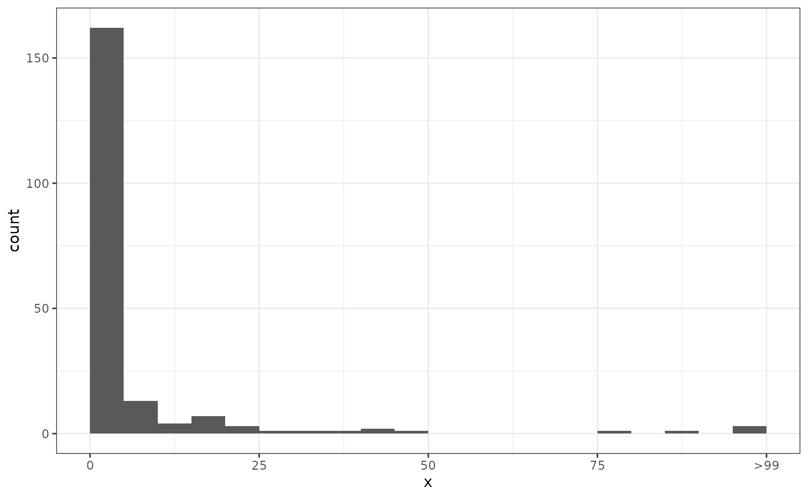

Modelling disease control interventions
Sebastian Funk and James M. Azam
Source:vignettes/interventions.Rmd
interventions.Rmdepichains does not provide any direct functionality for studying reductions in transmission (e.g. from public health interventions).
However, the flexible simulation functionality that it includes can be used to consider some specific changes to the parameters that can be interpreted as the result of changes in social behaviour or control measures.
Here we investigate the effect on outbreak sizes, but the same approaches could be used for investigating chain lengths (using the statistic argument to simulate_summary) or the time progression of outbreaks (using the simulate_tree function).
Code
## main package
library("epichains")
## for plotting
library("ggplot2")
## for truncating the offspring distribution later
library("truncdist")As a base case we consider the spread of an infection with a negative binomial offspring distribution with mean 1.2 and overdispersion parameter 0.5. We simulate 200 chains tracking up to 99 infections:
Code
sims <- simulate_summary(
index_cases = 200, offspring_dist = rnbinom, stat_max = 99, mu = 1.2,
size = 0.5
)We then plot the resulting distribution of chain sizes
Code
sims[is.infinite(sims)] <- 100 # Replace infections > 99 with 100 for plotting.
ggplot(data.frame(x = sims), aes(x = x)) +
geom_histogram(breaks = seq(0, 100, by = 5), closed = "left") +
scale_x_continuous(breaks = c(0, 25, 50, 75, 100),
labels = c(0, 25, 50, 75, ">99")) +
theme_bw()
Reducing the strength of transmission
Following (Lloyd-Smith et al. 2005) we consider two ways in which disease control interventions can reduce the reproduction number: population-wide and individual-specific control.
Population-wide control
By population-level control we mean an intervention that reduces the mean number of offspring (i.e. the reproduction number) by a fixed proportion.
For example, to reduce R by 25% at the population level we scale the mu parameter from 1.2 to 0.9:
Code
sims <- simulate_summary(
index_cases = 200, offspring_dist = rnbinom, stat_max = 99, mu = 0.9,
size = 0.5
)
sims[is.infinite(sims)] <- 100 # Replace infections > 99 with 100 for plotting.
ggplot(data.frame(x = sims), aes(x = x)) +
geom_histogram(breaks = seq(0, 100, by = 5), closed = "left") +
scale_x_continuous(breaks = c(0, 25, 50, 75, 100),
labels = c(0, 25, 50, 75, ">99")) +
theme_bw()
Individual-level control.
In simulating population-level control we now apply the same reduction as before (25%) but instead of assuming that the mean is reduced we apply this such that 25% of individuals do not transmit further at all, whereas the remaining 75% generate offspring as in the uncontrolled case.
To do this, we can no longer use the standard negative binomial distribution that comes with R.
Instead, we define a random generator from a modified negative binomial distribution that includes our individual-level control as a control argument indicating the level of individual-level control (0: no control; 1: full control):
Code
rnbinom_ind <- function(n, ..., control = 0) {
## initialise number of offspring to 0
offspring <- rep(0L, n)
## for each individual, decide whether they transmit further
transmits <- rbinom(n = n, prob = 1 - control, size = 1)
## check if anyone transmits further
if (any(transmits == 1L)) {
## for those that transmit, sample from negative binomial with given
## parameters
offspring[which(transmits == 1L)] <- rnbinom(n = n, ...)
}
return(offspring)
}Having defined this, we can generate simulations as before:
Code
sims <- simulate_summary(
index_cases = 200, offspring_dist = rnbinom_ind, stat_max = 99, mu = 1.2,
size = 0.5, control = 0.25
)
sims[is.infinite(sims)] <- 100 # Replace infections > 99 with 100 for plotting.
ggplot(data.frame(x = sims), aes(x = x)) +
geom_histogram(breaks = seq(0, 100, by = 5), closed = "left") +
scale_x_continuous(breaks = c(0, 25, 50, 75, 100),
labels = c(0, 25, 50, 75, ">99")) +
theme_bw()
Preventing superspreading events
Another way of controlling a disease would be to prevent individuals from spreading to a large number of others, for example by preventing mass gatherings or, more generally, settings where superspreading events can occur.
We can model this by truncating the offspring distribution at a certain size. This can be done, for example, using the truncdist R package. We use this to define a truncated negative binomial offspring distribution:
Code
We use this to simulate chains in a situation where the maximum of secondary cases that each infected person can generate is 10. This can be likened to a disease control strategy where gatherings are limited to 10 people.
Code
sims <- simulate_summary(
index_cases = 200, offspring_dist = rnbinom_truncated, stat_max = 99,
mu = 1.2, size = 0.5, max = 10
)
sims[is.infinite(sims)] <- 100 # Replace infections > 99 with 100 for plotting.
ggplot(data.frame(x = sims), aes(x = x)) +
geom_histogram(breaks = seq(0, 100, by = 5), closed = "left") +
scale_x_continuous(breaks = c(0, 25, 50, 75, 100),
labels = c(0, 25, 50, 75, ">99")) +
theme_bw()
Truncating the generation interval
Lastly, we consider a situation where the generation interval is shortened. We do not model this explicitly but instead consider the effect on the offspring distribution.
For example, if our generation interval is from a gamma distribution with shape = 25 and rate = 5 (corresponding to a mean of 5 and standard deviation of 1), and we stop all transmission that would normally occur more than 6 days after infection, we can calculate the proportion of transmissions that are prevented as
In other words, this would prevent 16% of infections in this example.
The value of control can be used in the examples above to study the effect on outbreak sizes.